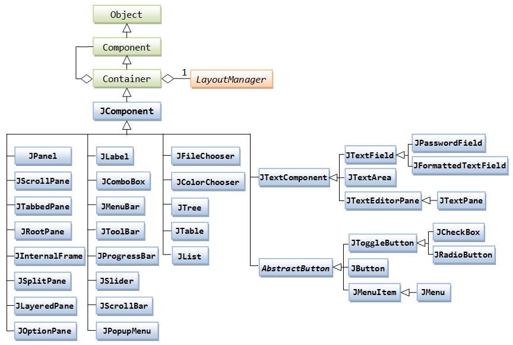
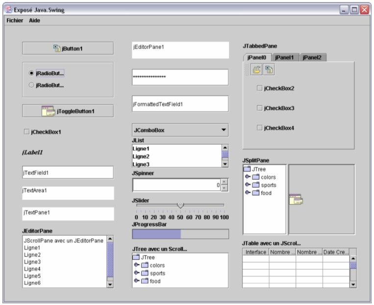
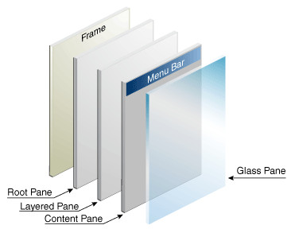
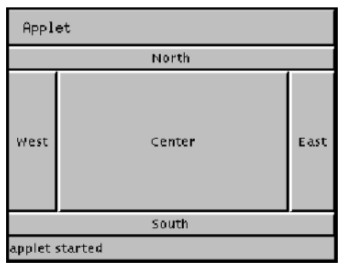
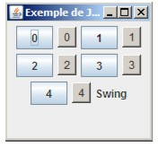
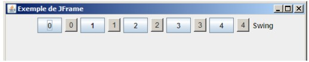

Survol de swing
Dans les premières versions de java, les applications graphiques utilisaient AWT (Abstract Window Toolkit, packagejava.awt).
Les composants graphiques de awt utilisaient directement les composants de l'OS hôte (appelés heavyweight).
AWT a été complété / remplacé par swing (package
javax.swing).
Les composants swing sont dits lightweight car ils sont développés en java et n'utilisent pas de code natif (sauf les top-level components).
Les principaux top-level components sont JDialog et JFrame :
Tous les autres composants doivent etre placés dans un top-level component.
Ils descendent tous de JComponent.


Les composants ne sont pas placés directement dans un top-level container mais dans le content pane qui lui est associé.
(voir
JFrame.getContentPane())

Layout
On verra plus loin que swing utilise les patterns Strategy et Composite pour représenter les composants.Le layout peut etre fait de plusieurs manières :
BorderLayout  FlowLayout (comme ils viennent)


GridBagLayout (plus complexe mais plus souple).
Look and feel
(plaf = pluggable look and feel, packagejavax.swing.plaf)
Permet aux applications de choisir plusieurs apparences :
- CrossPlatformLookAndFeel => Metal (défaut)
- SystemLookAndFeel => Windows, Motif, Macintosh
Peut etre changé lors de l'exécution de l'application.
Hello Swing
Différentes manières d'avoir le même résultat :Hello Swing 1
(voir HelloSwing1.java)
import javax.swing.*;
public class HelloSwing1 {
public static void main(String argv[]) {
JFrame frame = new JFrame("Hello Swing");
JPanel contentPane = new JPanel();
JTextArea text = new JTextArea("Hello swing");
contentPane.add(text);
frame.setDefaultCloseOperation(JFrame.EXIT_ON_CLOSE);
frame.setContentPane(contentPane);
frame.setSize(300,100);
frame.setVisible(true);
}
}
Hello Swing 2
Autre manière possible :(voir HelloSwing2.java)
import javax.swing.*;
public class HelloSwing2 extends JFrame {
public static void main(String argv[]) {
HelloSwing2 helloSwing = new HelloSwing2();
}
public HelloSwing2(){
setTitle("Hello Swing");
JPanel contentPane = new JPanel();
JTextArea text = new JTextArea("Hello swing 2");
contentPane.add(text);
setDefaultCloseOperation(JFrame.EXIT_ON_CLOSE);
setContentPane(contentPane);
setSize(300,100);
setVisible(true);
}
}
Hello Swing 3
On peut faire aussi plus court :(voir HelloSwing3.java)
import javax.swing.JOptionPane;
public class HelloSwing3 {
public static void main(String args[]){
JOptionPane.showMessageDialog(null, "Hello Swing 3");
// JOptionPane.showMessageDialog(null, "Hello Swing 3", "Hello Swing", JOptionPane.PLAIN_MESSAGE);
}
}
- Allez voir dans l'API javadoc pour comprendre ce code (que signifie ce
- Décommentez la seconde ligne et regardez ce que ça donne.
- Quelles autres constantes aurait-on pu utiliser à la place de
null dans la première ligne ?).
- Décommentez la seconde ligne et regardez ce que ça donne.
- Quelles autres constantes aurait-on pu utiliser à la place de
JOptionPane.PLAIN_MESSAGE ?
Swing et les patterns
Swing fait un grand usage des patterns.Composite
Les composants graphiques sont emboîtés dans une structure arborescente, voir l'exemple sur la page Composite.Observer
Voir page Observateur.Les observables sont les éléments de la vue, composants graphiques descendant de
JComponent.
On peut leur associer des observateurs, appelés listeners.
Pour savoir quel genre de listener on peut associer à un composant, il suffit de regarder ses méthodes
adXXXListener().
Par ex,
JComboBox contient addActionListener(), addItemListener(), addPopupMenuListener()
Les observateurs sont donc les listeners, qui implémentent l'interface
java.util.EventListener.
Swing fournit un grand nombre de listeners, voir le tutorial Oracle pour une liste complète.
Selon les observateurs, la méthode
update() se traduit par une ou plusieurs méthodes comme actionPerformed(), mousePressed(), mouseReleased() etc.
Exercice : Gestion d'événements.
Recopiez et exécutez le code de EventDemo.java.
Recopiez et exécutez le code de EventDemo.java.
| Pattern observer | Swing |
|---|---|
| classe Observable | javax.swing.JButton |
| addObserver(Observer o) | addActionListener(ActionListener l) |
| interface Observer | interface java.awt.event.ActionListener |
| update(Object arg) | actionPerformed(ActionEvent ae) |
TP4 question 2
TP4 question 3.1